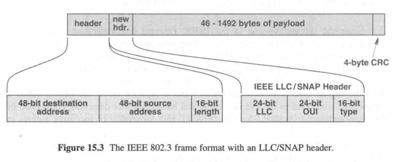
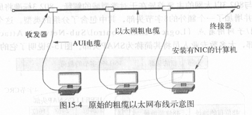
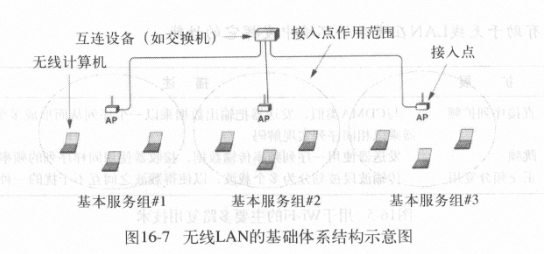
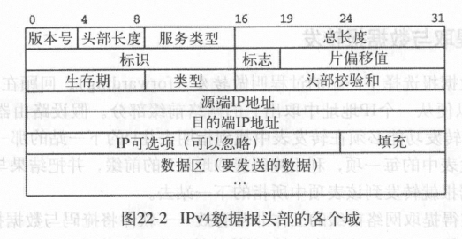

计算机网络复习
按章节
1.9 OSI七层模型
设计者: 国际标准化组织ISO, 国际电信联盟ITU
OSI七层模型: 物理层/数据链路层/网络层/传输层/会话层/表示层/应用层
TCP/IP位于: 传输层/网络层
会话层和表示层几乎没有内容
3.4 CS模型
| 服务端程序S | 客户端程序A |
|---|---|
| 先启动 | 后启动 |
| 不知道C | 必须知道S的位置 |
| 积极等待C来连接 | 需要通讯时初始化连接 |
| 通过收发数据进行通讯 | 通过收发数据进行通讯 |
| 服务之后继续运行, 等待下一个C来连接 | 可能结束 |
Internet只提供基本通讯, 实际上是由计算机上的程序来处理连接
3.5 C/S程序的特点
略
3.13 网络编程Socket API
事实标准: Socket API
9.12 单工/半双工/全双工传输
信道的三种类型
单工: 只能单向传输, 单根光纤就是单工, 类比收音机, 电视
全双工: 可以同时双向传输, 有两个光纤就可以组成全双工, 类比电话
半双工: 需要一个共享传输介质, 可以双向传输但是不能同时, 类比对讲机
10.3 模拟调制
载波: 信息发送出去时以电波的形式, 负责承载信息的波就是载波
调制: 根据要发送的信息, 对载波进行的调整
原始载波(输入1) --\
(调制器) ---> 调制过的载波(输出)
信息 (输入2) --/
三种主要调制技术: 调幅, 调频, 移相调制
10.12 Modem
为了方便网络安装, 一般将调制和解调功能集成在一个叫做调制解调器的设备中
12.6 局部环路特性和适应
接入技术: ISP到用户的连接
本地用户环路(local subscriber line)/本地环路(local loop): 电话公司交换局到用户之间的物理连接, 一般是使用双绞线 (其实就是电话线路?)
DSL: 一种利用local loop提供网络的技术
ADSL: 不对称DSL, 利用频分复用将local loop的带宽分成三个区域
| 频率 | 功能 |
|---|---|
| 0-4 | 普通老式电话业务 |
| 26-138 | 上行频带 |
| 138-1100 | 下行频带 |
因为本地环路的电气特性变化各异，ADSL采用了自适应技术，即一对调制解调器先探测彼此之间连接线路上的许多频率，然后选择在此线路上能产生最优传输质量的频率和相应的调制技术。
12.7 ADSL的传输速率
上行: 32 - 640 Kbps, 去掉控制信道: 32 - 576 Kbps
下行: 32 - 8448 Kbps
12.9 电缆调制解调器技术
本地环路具有局限性: 双绞线不抗干扰,
因此创造了基于 同轴电缆 + FDM + 统计复用 的电缆调制解调器技术, 每一组用户共享一个数据信道, 通过Modem判断数据是否属于该用户
传输速率: 上行 512 Kbps, 下行 52 Mbps
13.4 本地和广域包交换网络
| 类型 | 距离 |
|---|---|
| LAN | 房间/建筑 |
| MAN | 大城市 |
| WAN | 多个城市 |
13.9 包识别, 解复用, MAC地址
地址: 在包交换系统中, 解复用时使用的标识符, 每个包都包含了目的地地址
IEEE地址: 48位地址, 每个NIC都不一样, 分为前24位OUI, 24位NIC地址
13.10 单播, 广播, 多播
IEEE保留了MAC地址中的一位来区分单播和多播
广播视为一种特殊的多播, 广播地址所有位全1
13.11 广播, 多播和多点传递
在LAN中, 广播和多播极大地提高了效率
14.6 随机接入协议
接入技术: 多台相互独立的计算机如何进行协调接入一个共享介质
MAC层: Media Access Control 介质接入控制
方法: 采用复用技术的改进形式, 采用分布式算法
多址接入协议
- 受控接入协议
- 预约
- 轮询
- 令牌传递
- 随机接入协议
- ALOHA
- CSMA/CD
- CSMA/CA
- 信道分配协议
- FDMA
- TDMA
- CDMA
在LAN中, 用户接入共享介质的时机是随机的, 因此可能造成冲突, 需要用合适的方法解决
| 类型 | 描述 |
|---|---|
| ALOHA | 教科书中流行的协议, 但没有实际应用, 划分上行/下行两个频段用来传输信息, 上行采用随机延迟来解决冲突问题, 下行采用广播机制 |
| CSMA/CD | 带冲突检测的载波侦听多址接入, 原始以太网使用, 但交换式以太网不再使用, 使用载波侦听+冲突检测+指数退避算法解决冲突问题 |
| CSMA/CA | 带冲突避免的载波侦听多址接入, 无线LAN使用, 与CSMA/CD类似, 不同在于分组传输前会发送一个控制报文, 接收方广播控制消息 |
15.3 以太网帧格式
(传统)以太网: 是一种LAN技术, 最早在施乐公司的PARC中发明, 后来被标准化
(传统)以太网帧格式:

以太网帧(64-1518) := 头部(14) + 载荷(46-1500) + CRC(4)
头部 := 目的地址(MAC地址, 6) + 源地址(MAC地址, 6) + 类型(2)
15.4 以太网帧的类型域
以太网帧类型域包含了载荷中的报文类型, 如IPv4/IPv6/ARP等, 接收方检查该值来进行复用与解复用
15.5 802.3以太网
802.3以太网: IEEE 802.3重新修订后的以太网标准, (但不是很成功)

802.3以太网帧(64-1518) := 头部(14) + SNAP头部(8) + 新载荷(46(存疑)-1492) + CRC(4)
头部 := 目的地址(MAC地址, 6) + 源地址(MAC地址, 6) + 帧长度(2)
SNAP头部 := LLC(3) + OUI(3) + 类型(2)
兼容性处理: 类型域<=1500是802.3帧, 否则是传统以太网帧
15.7 粗缆布线的以太网
粗缆以太网(Thick wire Ethernet)/粗网(Thicknet, 10Base5): 最初版本的以太网布线方案, 因为其使用笨重的同轴电缆+收发器+AUI电缆方式而得名.

15.8 细缆布线的以太网
细缆以太网(Thin wire Ethernet)/细网(Thinnet, 10Base2): 第二代以太网布线方案, 使用细同轴电缆依次串联计算机, 不再需要AUI线, 收发器集成到NIC中, 缺点是容易单点故障

15.9 双绞线布线的以太网
双绞线以太网(10BaseT): 第三代以太网布线系统, 使用了双绞线取代同轴电缆, 引入中心集线器(hub)

集线器是物理层设备, 具有一定的功能, 比如CSMA/CD等, 现在大部分已经被交换机取代
16.2 无线网络的分类
和有线网络类似: 个域网/局域网/城域网/广域网
16.3 个域网
蓝牙/红外/ISM无线
16.5 WLAN和Wi-Fi
WLAN技术的种类很多, 归类于IEEE802.11标准
Wi-Fi联盟: 一群无线设备供应商组成的非营利性组织, 使用802.11标准对无线设备进行测试与认证
16.8 WLAN基础结构
WLAN的三个构件: 接入点(Access Point, AP, 非正式也称基站), 互联机构(交换机或路由器等), 无线主机(Station)


WLAN的两种类型: Adhoc无接入点结构(很少), Infrastructure有中心接入点
互联设备到AP的有线连接通常使用双绞线以太网
基本服务组(BSS): 在某一个给定AP范围内的计算机集合
16.9 重叠, 关联, 802.11帧格式
重叠: 两个AP太近, 一台STA可以同时触及到两个AP
802.11要求每个主机只能与一个AP相关联(associate), 而且在802.11帧中携带了AP的MAC地址

16.11 竞争与无竞争接入
802.11定义了两种接入方法
- 点协调功能PCF
- 分布式协调功能DCF
802.11使用CSMA/CA协议来解决接入中的隐蔽站问题
- 传输分组前交换一对RTS,CTS控制报文
- 没有冲突检测, 而是采用确认ACK+超时重传机制
16.13 PAN技术与标准
802.15.1a 蓝牙
802.15.3a UWB 超宽带
802.15.4 Zigbee 工业无线控制标准
17.3 光纤猫扩展
最简单的LAN扩展机制: 光纤+一对光纤猫, 连接一台计算机和一个远程以太网
17.4 中继器
中继器: 信号放大, 信号转发, 早期广泛应用
17.5 网桥与桥接
网桥: 往往用来连接两个LAN网段(比如hub), 保证两边的计算机都能互相连通
计算机无法分辨LAN中有无网桥
17.6 自学习网桥与帧过滤
网桥与一根网线直连的区别: 网桥分隔冲突域, 但不分隔广播域 网桥仅在有必要的时候才进行转发
- 源地址和目标地址位于两个网段
- 广播帧和多播帧
网桥能够自动学习设备位于网桥的哪一侧(基于分组中的源MAC地址)
17.7 桥接的好处
桥接的各个网段可以同时进行传输, 使得不同建筑物之间的通讯成为了可能
17.8 分布式生成树
如果网桥连接导致网络中存在环路, 那么广播和多播帧会被无限循环转发下去
因此网桥会执行生成树算法来生成一个树
18.7 下一条转发
分组交换机收到一个分组后, 如果分组的目的地不是直连在交换机上, 就需要查表转发
交换机的转发表: 目的地址:输出接口
18.9 广域网动态路由更新
转发表的要求
- 全局通信 - 必须覆盖所有可能目的地的
- 最优路径 - 下一条必须是距目的地的最短路径
路由软件: 自动重新配置转发表的软件
18.12 分布式路径计算
分布式路径计算的两种常用形式:
- 链路状态路由LSR, 采用Dijkstra算法
- 距离向量路由DVR
LSR
DVR: 每台交换机定期告诉相邻交换机自己的距离向量表(包含一对(目的,距离)), 相邻交换机据此更新自己的转发表
18.13 最短路径的计算
Dijkstra算法
20.6 用路由器连接物理网络
路由器是一台专门完成网络互联任务的专用硬件系统, 可以将多个使用不同技术（包括不同的传输介质、物理编址方案或帧格式）的网络互相连接（互联）起来 (比如连接以太网和WiFi网)
21.7 IP有类编址方案
IP地址有类编址方案
| 类别 | 标识位 | 前缀长度 | 最大网络数量 | 后缀长度 | 最大主机数量 |
| ———- | ——— | ———— | —————— | ———— | —————— |
| A | 0 | 7 | 128 | 24 | 2^24 |
| B | 10 | 14 | 16384 | 16 | 65536 |
| C | 110 | 21 | 2^21 | 8 | 256 |
| D(组播) | 1110 | - | - | - | - |
| E(保留) | 1111 | - | - | - | - |
21.10 IP无类编址方案
IP地址无类/子网编址方案: 引入附加的地址掩码(子网掩码)来指定网络地址和主机地址的分界线
无类地址 & 子网掩码 == 网络地址
21.11 CIDR表示法
格式: 地址/掩码中1的个数
22.4 IP数据报
IP数据报 := 头部 + 数据区(载荷区)
22.5 IP数据报头部格式

22.7 网络前缀提取与数据报转发
根据网络地址查询转发表发给下一站
22.8 最长前缀匹配
查询转发表时如果有多项匹配, 采用最长前缀匹配规则
22.11 IP封装
IP数据报要被封装到一个帧里才能发送出去, 帧的目的地址是下一站的IP地址对应的MAC地址(通过ARP协议获得)
22.14 IP分片和重装机制
22.15 分片数据报的收集
最大传输单元MTU: 每种物理网络规定的一帧能够携带的最大数据量
IP数据报分片机制: 当一个数据报长度大于前方网络的MTU时, 路由器会将数据报分成若干较小的片(fragment), 然后将每一片独立地封装发送出去
分片: 每个片与数据报的格式一样, 头部部分参数不同
- 标识: 每个数据报的唯一标识, 同一个原始数据报的所有片段的标识是一样的
- 标志: 标识了该数据报是片还是完整的数据报, 以及是否是最后一片
- 片偏移: 该片在原数据报中的位置
重装: 在所有片的基础上重新产生原数据报的过程, IP规定只有最终目的主机才能对片进行重装
23.9 ICMP报文格式与封装
因特网控制报文协议(ICMP): 利用IP来传输IP传输中发生的错误
ICMP报文放置在IP数据报的数据区传输
23.10 协议软件, 参数和配置
协议软件采用参数化设计
主机配置采用自举过程, 运行时获取到IP地址, 掩码, DNS服务器地址等参数填入程序中运行
24.3 UDP
UDP的特征:
- 端到端: UDP是一个传输协议, 它能区分运行在给定计算机上的多个应用程序
- 无连接: UDP提供给应用的接口遵从无连接模式
- 面向报文: 使用UDP的应用进程所发送和接收的数据是单个报文
- 尽力而为: UDP提供给应用的是与IP一样的尽力传递机制
- 任意交互: UDP允许应用进程给很多其他应用进程发送数据, 也允许从很多其他应用进程那里接收数据, 或者只跟一个其他应用进程相互通信
- 操作系统无关: UDP所提供的标识应用程序的方法, 不取决于本地操作系统所使用的标识符
24.4 无连接的通信模式
UDP采用无连接通信模式, 可以在任何时候发送数据, 不需要维护通信状态, 也不使用控制报文, 因此传输开销极低
24.7 交互模式和广播传递
UDP支持四种交互通信方式:
- 一对一
- 一对多
- 多对一
- 多对多
底层是利用IP组播和广播机制实现的
24.8 用协议端口号标识端点
协议端口号: 用来标识应用程序的标识符抽象集, 独立于底层操作系统
25.3 TCP
TCP提供的服务有7个主要特点:
- 面向连接: TCP提供面向连接的服务, 应用程序必须首先请求建立一个到目的地的连接, 然后使用这个连接来传输数据
- 点对点通信: 每个TCP连接上只有两个端点
- 完全的可靠性: TCP能保证在一个连接上发送的数据被正确地传递, 且保证数据的完整和按序到达
- 全双工通信: TCP连接允许数据在任何一个方向上流动, 并允许任何应用程序在任何时刻发送数据
- 流接口: TCP提供一个流接口, 利用它应用进程可以在一个连接上发送连续的字节流. TCP不必将数据组合成记录或是报文, 也不要求传递给接收应用进程的数据段大小一定要与发送端所送出的数据段大小相同
- 可靠的连接建立: TCP允许两个应用进程可靠地开始通信
- 友好的连接关闭: 在关闭一个连接之前, TCP必须保证所有数据已经传递完毕, 并且通信双方都要同意关闭这个连接
25.4 端对端服务与虚拟连接
TCP和UDP都是端到端协议: 提供在一台计算机上的应用进程与另一台计算机上的应用进程之间的通信能力
TCP是面向连接的协议, TCP提供的连接是一种虚拟连接, 因为它是软件实现的连接
TCP将底层因特网视为一个通信系统
25.5 一般可靠传输协议所采用的技术
分组乱序
- 排序技术: 每个分组都附加一个序号
分组丢失
- 带重传的正向确认: 接收方发送ACK报文表示成功接收; 若超时仍未收到ACK, 则重传
分组重复(重放错误)
- 每一次会话用一个唯一的ID标识
数据过载
- 停-走系统: 不好, 效率很低
- 滑动窗口: 定义窗口大小为接收方一次可以承载的最大数据量/发送方收到ACK前可以发送的最大数据量, 发送方收到ACK之后窗口向后移动
25.11 缓冲, 流控制, 窗口
TCP使用了以字节计量的窗口, 接收方将自己剩余的缓冲区大小放在ACK报文中, 发送方根据这个窗口大小来决定是继续发送还是停止
26.4 动态路由和路由器
26.7 两类因特网路由协议
因特网路由协议的分类:
- 内部网关协议IGP
- 外部网关协议EGP
26.12 OSPF协议
OSPF是一种基于Dijkstra算法的内部网关协议
26.16 组播路由技术
29.9 私有密钥(对称)加密
29.10 公开密钥(非对称)加密
29.11 使用数字签名的鉴别
签名: 发送方使用自己的私钥对报文进行加密
验证: 接收方使用发送方的公钥进行解密
认证+加密: 发送者先对报文进行签名, 再用接收者的公钥进行加密
29.13 防火墙
防火墙: 防止因特网上的问题扩散到本地内部的计算机上的技术, 一般放置在本单位的网络与外部因特网之间
29.14 包过滤防火墙的实现
防火墙利用包过滤技术来防止不希望有的通信交互。每种过滤器规则都要给出数据包头部参数的组合，包括IP源地址、目的地址、协议端口号和传输协议类型等。
30.7 SNMP
简单网络管理协议SNMP: 基于IP的网络管理的标准协议